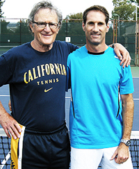
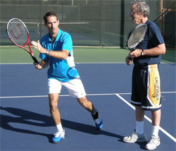
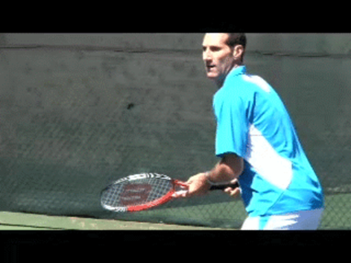

← Bài trước: The Loser's Edge | 🏠 Mental Game Trang chủ | Bài tiếp: → The Only Way to Win: American Junior Development
Tâm trí của tay vợt baseline - Và cách biến đổi nó
Thư viện kiến thức quần vợt thống nhất — Cơ bản, Phân tích kỹ thuật, Thư viện tham khảo, và nhiều hơn nữa
Tâm trí của tay vợt baseline - Và cách biến đổi nó
Jeff Greenwald
Tâm trí của tay vợt baseline liên quan như thế nào với phong cách tấn công?
Tháng trước tôi đã viết về quyết định của mình để đưa nhiều cú đánh lưới vào game baseline của mình, và cách đó đã giúp tôi giành chiến thắng trong giải vô địch thế giới cao cấp ITF gần đây nhất. (Nhấn vào đây) Trong bài viết này, tôi muốn phát triển thêm về các quá trình tâm lý và cảm xúc quan trọng trong quá trình chuyển đổi này.
Đối với hầu hết các huấn luyện viên, khuyên các tay vợt ở mọi cấp độ tấn công lưới là điều bình thường. Nhưng thực tế thì sao? Có bao nhiêu tay vợt thực sự làm được điều đó?
Có những lý do tại sao điều đó không xảy ra, và tôi cũng phải đối mặt với chúng. Nguyên nhân chính là tâm lý của tay vợt. Tâm lý giải thích tại sao tay vợt chơi như thế nào, sự hài lòng họ nhận được từ game của mình, và những trở ngại nội tại ngăn cản sự thay đổi thực sự xảy ra.
Đây là câu chuyện về tâm lý đã thúc đẩy game của tôi trong 30 năm - những gì tôi gọi là tâm trí của tay vợt baseline. Nếu chúng ta hiểu tâm trí của tay vợt baseline, chúng ta có thể hiểu tại sao nhiều tay vợt chống lại lời khuyên thêm tấn công vào game của mình. Điều này đúng từ tour đến cấp độ câu lạc bộ 3.0.
Thay đổi thực sự
Đây cũng là câu chuyện về cách tôi đã thay đổi tâm lý đó. Đây là câu chuyện về quá trình tâm lý thách thức mà tôi đã phải trải qua trong việc này - cam kết, tích hợp và thực hiện việc bổ sung này vào game của mình trong quần vợt thi đấu cao cấp.
Tôi đã thay đổi tâm lý baseline mà tôi yêu thích như thế nào?
Mong muốn của tôi là quá trình và sự thay đổi này là điều mà các tay vợt ở mọi cấp độ có thể hướng tới nếu họ chọn một con đường tương tự. Nhưng thực tế thì nó sẽ áp dụng cho bất kỳ thay đổi cơ bản nào trong game của bạn. Chướng ngại vật chính luôn luôn là tâm lý.
Đối với tôi, điều quan trọng là tìm thấy một loại sự hài lòng mới trong cách tôi giành được điểm và tái định nghĩa những gì tôi yêu thích về quần vợt thi đấu. Nếu không có sự thay đổi về tâm lý này, tôi sẽ không cam kết với quá trình.
Tôi cũng rất vui khi bài viết này được xuất bản cùng với hai bài viết liên quan khác về việc thêm tấn công quần vợt vào game của mình từ các cộng tác viên của tôi trong quá trình thay đổi của mình, các huấn luyện viên hàng đầu Marin County, California là Paul Cohen và Rod Heckleman.
Bài viết của Paul trình bày các bước để phát triển hoặc cải thiện cú đánh lưới thuận tay của bạn - điều mà tôi nhanh chóng nhận ra sẽ rất quan trọng nếu tôi muốn tin rằng tôi có thể thực sự hoàn thành công việc một khi tôi đến lưới. (Nhấn vào đây.)
Bài viết của Rod chi tiết các cải tiến quan trọng về bộ chân di chuyển của tôi, cũng như các bài tập và trận đấu thực hành tiến bộ mà tôi đã sử dụng trong một thời gian vài tuần để tích hợp cơ hội tấn công vào thực chiến thi đấu. (Nhấn vào đây.)

Từ đau chân đến làm việc với Paul Cohen.
Như tôi biết, đây là bài trình bày đa chiều duy nhất của loại này, được thực hiện bởi John Yandell, trong một trong những lần đầu tiên của Tennisplayer. Tôi mong đợi nghe ý kiến của bạn về bộ ba bài viết của chúng tôi trong Diễn đàn!
Điểm khởi đầu
Vậy tôi đã quyết định thay đổi từ một tay vợt gần như hoàn toàn chơi baseline thành một tay vợt cũng có thể tấn công lưới và làm điều đó thành công dưới áp lực thi đấu cao cấp như thế nào và khi nào?
Quyết định đó đến trong một khoảnh khắc, trong set thứ ba của bán kết trong một giải đấu quốc gia cao cấp trước đó. Tôi đang ngồi trên ghế khán đài với những cơn đau dữ dội, đang được điều trị cho nhiều cơn cramp ở chân.
Vào lúc đó, tâm trí tôi đã nhớ lại cuộc họp mà tôi đã có vài tuần trước với huấn luyện viên Paul Cohen, một cuộc họp mà tôi đã mô tả trong bài viết đầu tiên. (Nhấn vào đây.)
Nếu bạn chưa đọc bài viết, đó là một cuộc họp khá bất thường. Sau khi xem một trong những trận luyện tập của tôi, Paul đã bước lên và nói thẳng rằng tôi đang chơi quần vợt ngu ngốc nhất mà anh từng thấy.
Có thể là tôi nên đóng lưới "mọi lúc" không?
Với game của tôi - và anh ấy nói điều đó như một lời khen - tôi nên đóng lưới "mọi lúc". Lúc đó, tôi cảm thấy hài lòng và tò mò. Loại người nào lại nói điều gì đó như vậy sau khi gặp bạn lần đầu tiên? Ai đó có điều gì đó để nói và gọi nó theo cách anh ấy nhìn thấy, tôi đã nghĩ.
Nhảy đến vài tuần sau đó và bán kết quốc gia đó, khi tôi đang đau đớn trong một trận đấu baseline dữ dội khác, tôi nhận ra rằng Cohen có thể có lý. Khi tôi quay trở lại California, tôi đã liên hệ với Paul, và quá trình bắt đầu.
Sự ngược đãi
Điều ngược đãi là, như một chuyên gia tâm lý thể thao và nhà trị liệu, tôi đang trong ngành thay đổi. Tôi đã giúp hàng trăm tay vợt, bao gồm nhiều tay vợt trẻ USTA và tay vợt chuyên nghiệp tour chơi quần vợt không sợ hãi hơn, chơi lỏng lẻo hơn, tin vào bản thân và game của mình, và giành chiến thắng nhiều hơn.
Nhưng bây giờ, tôi đang cân nhắc đi ra khỏi vùng an toàn của mình theo một cách hoàn toàn khác. Đến thời điểm này, tôi chưa bao giờ cân nhắc việc thêm chiều tấn công lưới.
Để làm điều này, tôi cần phải thay đổi tâm lý của tay vợt baseline. Nhưng tôi thực sự thích chỉ đạo điểm từ baseline. Thay đổi phong cách chiến thuật của tôi sẽ làm gì với tâm lý của tôi trong trận đấu? Nó có can thiệp vào các phản ứng tự động, bản năng mà tôi đã rèn luyện trong nhiều năm không?
Thực tế là tôi thích chỉ đạo từ backcourt.
Tôi có thể tìm thấy động lực để thực hiện thay đổi này không? Tôi có tìm thấy sự hài lòng thực sự trong việc tấn công lưới thay vì chỉ đạo từ back không? Nhìn lại, đây là những câu hỏi quan trọng.
Tâm lý cá nhân
Để hiểu cách tôi đã trả lời chúng, điều quan trọng là hiểu thêm về tâm lý của tay vợt baseline và cách nó đã hình thành nền tảng cho cảm giác tự tin của tôi như một tay vợt thi đấu.
Tôi đã học tất cả các phần của game như một tay vợt trẻ - groundies, serve, volleys - giống như hầu hết các tay vợt khác ban đầu. Nhưng thực tế là tôi chưa bao giờ cố gắng kết hợp các phần này trong trận đấu của mình - và chưa bao giờ muốn làm điều đó.
Như tôi đã nói trong bài viết đầu tiên, cha tôi đã cố gắng khuyến khích tôi "đi vào" và kết thúc điểm tại lưới. Nhưng làm thế nào tôi có thể tin vào một chiến thuật mà tôi không hiểu, không luyện tập, nhưng phải thực hiện nó với trận đấu trên đường?
Đó là những gì tôi nói với bản thân mình. Nhưng có một lý do sâu hơn. Lý do đó là nhận dạng của tôi như một tay vợt được kết nối với tâm lý baseline.
Tôi thích cuộc đấu tranh từ góc đến góc của backcourt.
Thực tế là tôi cảm thấy rất hài lòng khi đánh bóng sau bóng. Phong cách của tôi trong thời gian trẻ và sau đó là đại học là neo mình vào baseline, cố gắng không bỏ lỡ, và chạy như một con thỏ đường.
Tôi đã quen với chiến đấu thể chất và học cách thưởng thức nó. Có một cảm giác kiểm soát và thoải mái liên quan đến việc đẩy các tay vợt khác xung quanh và cuối cùng đánh bại nhiều người họ. Đối với tôi, cú serve ace chỉ không mang lại sự hài lòng như một điểm backcourt khó khăn.
Lạ lùng như thế nào, tôi thậm chí có thể thừa nhận rằng có những lúc tôi thậm chí còn đá cú serve đầu tiên của mình chỉ để bắt đầu điểm. Điều này là vì tôi rất hào hứng để bắt đầu một trận đấu slug fest như vậy.
Có sự căng thẳng và kịch tính trong một điểm rally tốt mà buộc tôi phải tham gia và đâm đầu vào từ quả bóng đầu tiên. Khi độ dài của rally tăng lên, sự hào hứng của tôi cũng tăng lên.
Tôi yêu thích sự căng thẳng của những điểm rally mười hai quả bóng khiến tôi căng thẳng hoặc chạy. Có những lúc tôi thậm chí còn cảm thấy hơi thất vọng khi điểm kết thúc - lại như vậy có vẻ kỳ lạ.
Khi game của tôi phát triển, tôi thường biết chính xác nơi tôi sẽ đánh bóng trước khi nó chạm vào phía của tôi trên sân. Dựa trên kinh nghiệm, nơi tay vợt đối thủ đang đánh và những gì tôi có thể nhìn thấy từ vợt của anh ấy, tôi đã phát triển khả năng dự đoán tốt.
Cú serve lớn không mang lại cho tôi sự hài lòng như một điểm rally khó khăn.
Điều này đi kèm với một hình ảnh về nơi tôi sẽ đi với cú đánh tiếp theo. Quá trình này trở nên tự nhiên đến mức nó xảy ra tự động.
Một số người nói rằng tôi rất nhanh chân - và tôi tin rằng điều đó là đúng. Nhưng có nhiều thứ hơn đang diễn ra trong cách tôi chơi trận đấu của mình.
Dự đoán cú đánh của đối thủ và biết phản hồi của tôi tạo ra một mức độ thoải mái. Nó tạo ra tính dự đoán.
Điều này có lợi ích bổ sung to lớn là giảm "rối loạn nhận thức" và sự không chắc chắn. Tất cả các tay vợt đều thích kiểm soát những gì xảy ra trên sân. Phong cách chơi của tôi đã mang lại cho tôi cảm giác như vậy.
Trong nhiều trận đấu, tôi tin chắc rằng nếu tôi có thể buộc người chơi khác chơi game của tôi, tôi sẽ thắng. Ngược lại, khi tôi nghĩ về nó, một game tấn công luôn trông có vẻ rủi ro và không chắc chắn.
Khả năng chịu đựng cú đánh
Theo bản chất, các mẫu cú đánh của tay vợt baseline tương đối cố định. Điều này tạo ra một sự cứng nhắc nhất định. Thực tế là chơi từ baseline giữ cho các khả năng hạn chế và dễ quản lý.
Nhiều tay vợt quần vợt chuyên nghiệp có kinh nghiệm hiểu khái niệm về khả năng chịu đựng cú đánh. (Nhấn vào đây để đọc giải thích cổ điển của Elliot Teltscher.) Một số tay vợt có nhiều khả năng chịu đựng và một số có ít hơn. Tôi tự hào về việc có khả năng chịu đựng cao hơn hầu hết đối thủ của mình.
Một tâm lý như Rafael Nadal - dựa trên khả năng chịu đựng cú đánh.
Mục tiêu của tôi là tạo ra các trao đổi nơi tôi không cảm thấy vội vàng, nơi tôi kiểm soát nhịp độ của các trao đổi, các trao đổi khiến đối thủ của tôi cảm thấy không thoải mái cả về thể chất lẫn tinh thần.
Tôi tìm thấy đây là một cách chơi thú vị. Tôi thích áp đặt game của mình lên người chơi khác, và biết rằng khi tôi có thể làm được điều đó, tôi có cơ hội rất tốt để giành chiến thắng. Đây là một tâm lý tương tự như các tay vợt như Rafael Nadal hoặc Björn Borg.
Tôi biết mình là ai trên sân và cảm thấy rất thoải mái trong trận đấu. Và tâm lý này đã mang lại đủ thành công thi đấu để ngăn tôi không cân nhắc điều gì đó khác hoàn toàn. Tất cả đều có một khoản thanh toán cảm xúc đáng kể trong game mà tôi đã phát triển và rất đính kèm.
Quá trình tiến hóa
Khoảng thời gian tôi chuyển sang 35 tuổi, khi tôi giành chiến thắng trong giải vô địch thế giới ITF đầu tiên, game của tôi đã biến đổi thành một phiên bản tấn công hơn của chính nó. Thay đổi chính tôi đã thêm vào là một sự tập trung mới vào việc cố gắng kiểm soát với cú thuận tay của mình và trở nên tích cực hơn với cú trái tay của mình khi có thể.
Tôi cũng bắt đầu lỏng lẻo hơn cánh tay và đang serve lớn hơn một chút. Nhưng tôi vẫn tránh lưới như tránh dịch bệnh.
Cốt lõi của game của tôi vẫn là một trận đấu rally. Mục tiêu của tôi vẫn không phải bỏ lỡ và di chuyển đối thủ xung quanh và buộc họ sai lầm. Nó chỉ là tôi cũng cố gắng tạo cơ hội để đánh nhiều điểm thắng. Các rally của tôi thường vẫn dài hơn mười quả bóng, đôi khi dài hơn để giành được một điểm.
Game của tôi đã biến đổi khi tôi cố gắng chỉ đạo với cú thuận tay của mình - bên trong ra ngoài và bên trong vào.
Tôi cố gắng đánh hai phần ba tất cả các quả bóng với cú thuận tay của mình. Tôi sẽ đi bên trong ra ngoài để gây thiệt hại và sau đó, khi có thể, sử dụng cú đánh xuống đường mỗi cánh hoặc cú thuận tay bên trong để vết thương hoặc giành điểm trực tiếp.
Tôi đã luyện tập để trở nên tốt hơn trong các cú đánh buộc và các tổ hợp cú đánh. Tôi đã làm việc để có sự dũng cảm để đi cho chúng ngay cả khi tôi cảm thấy một chút do dự hoặc lo lắng.
Những bổ sung này đã giúp tôi giành được một số trận đấu dễ dàng hơn. Nhưng trong nhiều trường hợp, tôi vẫn thấy các tay vợt ít nhất là nhất quán hơn tôi và sẽ bỏ lỡ trước khi tôi phải rút ra các "điểm kết thúc" của mình.
Những bổ sung này chỉ củng cố thêm tâm lý baseline của tôi. Như một tay vợt baseline, tôi không cần phải lo lắng về quả bóng nào để đến.
Tôi đã neo mình vào một vùng thoải mái, chạy và đánh trên baseline ngang, một game yêu cầu ít suy nghĩ, chỉ cần hình ảnh, bản năng, thể dục và sự dũng cảm để đánh những cú groundstroke lớn vào thời điểm đúng.
Volleys thậm chí chưa nằm trong tầm nhìn. Tôi không thể thấy ý nghĩa trong việc thay đổi từ cú đánh tiếp cận xoáy cuộn nặng của mình thành cú đánh tiếp cận cắt bóng - cú đánh mà tôi cũng đã được nói trước đó sẽ dẫn đến volley.
Nhưng nhìn lại, tôi nhận ra rằng, đến mức tôi thậm chí đã cân nhắc ý tưởng, thực tế là tôi không thể chi trả rủi ro nhận thức liên quan đến việc cố gắng đóng lưới.
Ý tưởng đơn giản: sử dụng cú thuận tay của mình và hỗ trợ nó bằng một cú đánh lưới dễ dàng.
Chuyển đổi
Và điều đó đưa chúng ta trở lại điểm quyết định - bị đau khớp nặng nề trong trận bán kết của một sự kiện quốc gia. Đôi khi bạn cần một mức độ đau đớn nhất định để thực hiện một thay đổi lớn.
Tôi nhận ra rằng trò chơi của tôi đã gặp phải một bức tường. Khi tôi tiếp tục lớn tuổi hơn, tôi sẽ cần phải làm điều gì đó khác để tiếp tục duy trì trình độ và duy trì kết quả của mình.
Mặc dù rất khó để thừa nhận, nhưng tôi quyết định có lẽ cha tôi đúng. Tôi đã để quá nhiều trên bàn sau khi đánh một cú đánh đất xuyên thấu.
Vì vậy, tôi tiếp tục và bắt đầu làm việc với Paul. Khái niệm của Cohen khá đơn giản. Tận dụng cú thuận tay của tôi. Khi tôi đã gây đau đớn cho đối thủ bằng tốc độ, độ sâu hoặc khi tôi đã mở sân, tôi nên di chuyển về phía trước và kết thúc điểm.
Như tôi đã đề cập trong bài viết đầu tiên, Cohen tin rằng một phần lớn các quả bóng trong hầu hết các trận đấu thực sự là ngắn và do đó có thể tấn công được. Lời khuyên của anh ấy là học cách nhận biết những quả bóng này và đập chúng bằng cú đánh tốt nhất của tôi, cú thuận tay của tôi.

Làm việc với Paul, tôi nhận ra rằng tôi cần một cú bắt lưới kỹ thuật tốt hơn.
Đã di chuyển lên sân trên một quả bóng ngắn, trong hầu hết các trường hợp tôi sẽ có thể đóng chặt đủ để kết thúc điểm chỉ với một cú bắt lưới hoặc một cú đập bóng. Nhiều cú bắt lưới, Cohen giải thích, có thể đánh dễ dàng với góc ngắn.
Đối với tôi, đây là một cách tiếp cận hoàn toàn mới với lưới, vì tôi sẽ có thể sử dụng cú đánh tốt nhất và cú đánh mà tôi cảm thấy thoải mái nhất để bắt đầu chuỗi tấn công. Điều này hấp dẫn hơn nhiều so với việc nghĩ đến việc học nhiều chuỗi bắt lưới bắt đầu bằng cách cắt bóng truyền thống.
Tuy nhiên, khi Paul Cohen có tôi ở lưới đánh bóng như một người mới bắt đầu, tôi nghĩ, "Bạn có đang đùa không. Tôi đang làm gì vậy?"
Tuy nhiên, khi chúng ta bắt đầu làm việc với chiến lược này, điều rõ ràng là một trong những lý do tôi đã miễn cưỡng đến lưới trong quá khứ là chất lượng của cú bắt lưới của tôi, đặc biệt là ở phía thuận tay.
Rất nhanh chóng, với Cohen phê bình mọi chuyển động nhỏ, tôi bắt đầu thấy rằng có giá trị trong việc thực sự biết cách bắt lưới. Và tôi nhận ra rằng tôi chưa bao giờ thực sự làm chủ được cú đánh này.
Khi kỹ thuật của tôi cải thiện, tôi cảm thấy tự tin hơn khi đánh cú bắt lưới sau cú bắt lưới khác trong các bài tập của Cohen. Dần dần, tôi bắt đầu thấy những cơ hội tự nhiên để đi vào và cách khai thác chúng.
Rod đã giúp tôi với bộ chân di chuyển và cân bằng ở giữa sân.
Đây là quá trình mà tôi tiếp tục với huấn luyện viên/cộng tác viên khác của mình, Rod Heckelman, người quản lý chung tại câu lạc bộ quần vợt Marin County Mt. Tam nổi tiếng. Rod nhanh chóng chẩn đoán rằng một phần quan trọng khác của câu đố là bộ chân di chuyển chuyển đổi của tôi.
Ngoài việc cho tôi nhiều lần lặp lại tiếp cận, chúng tôi đã làm việc trên bước chia đôi của tôi ở giữa sân, thiết lập cân bằng, sau đó phá bóng để đánh cú bắt lưới cải thiện của tôi.
Tôi phát hiện ra rằng tất cả điều này yêu cầu một chuyển động nổ mạnh hơn một chút so với mô hình bộ chân di chuyển ngang mà tôi đã quen thuộc. Tuy nhiên, cuối cùng, nổ về phía lưới và kết thúc điểm sớm hơn yêu cầu ít thể lực hơn so với những trận đấu dài.
Làm việc với Rod, chúng tôi phát triển mô hình chuyển động này về phía trước như một phần của các bài tập kết thúc với tôi kết thúc điểm bằng một cú bắt lưới có góc hoặc một cú đập bóng có góc. Chúng tôi cũng phát triển một loạt các bài tập/thi đấu cạnh tranh và thiết lập một số loại trận đấu nhất định để làm cho quá trình chuyển đổi sang thi đấu giải đấu ở các giai đoạn tiến bộ.
Tôi cần chú ý hơn để xem quả bóng ngắn của đối thủ rơi ở phía tôi để đưa ra quyết định đi vào. Điều này khá thách thức vì nó yêu cầu tôi nhận thức hơn về ý định chiến lược của mình. Sau một thời gian, việc nhận biết quả bóng để tấn công bắt đầu cảm thấy gần như tự động và dễ dàng như một quả bóng rổ ở giữa sân.
Không tấn công trong 4 quả bóng? Bạn thua điểm.
Đối phó với tâm lý của người chơi cơ bản
Đây là tất cả những cải tiến quan trọng. Nhưng, phần quan trọng nhất là gì - đối phó với tâm lý của một người chơi cơ bản suốt đời?
Đây là nơi kinh nghiệm của tôi trong việc huấn luyện trò chơi tinh thần đóng vai trò quan trọng. Tôi biết rằng tôi phải mở mình ra cho một trải nghiệm mới và khác biệt, không chỉ là chơi điểm, mà còn là cách tôi thích chơi chúng.
Một khóa quan trọng là nhận thức không cố gắng quá nhiều trên quả bóng tấn công hoặc căng thẳng khi tôi nhận ra quả bóng mà tôi muốn. Với kiến thức của tôi về cách giữ thong thả và tập trung cùng một lúc, tôi có thể làm được điều này mà không gặp nhiều khó khăn.
Vì vậy, tôi bắt đầu ý thức hóa việc thả lỏng tư duy cơ bản của mình. Khi tôi làm vậy, tôi bắt đầu yêu thích khoảnh khắc nhận ra một quả bóng ngắn mà tôi có thể đập và theo dõi.
Tôi bắt đầu tự hào vì trở thành một người chơi hoàn thiện hơn. Kết thúc điểm ở lưới thực sự bắt đầu cảm thấy mạnh mẽ hơn so với một điểm cơ bản khó khăn.
Khi bạn nhận ra lợi ích to lớn của việc lấy thời gian từ đối thủ và thấy anh ta vội vàng để vượt qua, tấn công lưới bắt đầu cảm thấy mạnh mẽ và rất năng động. Với khu vực giữa sân không còn xa lạ, tôi cảm thấy như mình có thể sử dụng toàn bộ sân trong đời mình lần đầu tiên.
Tôi bắt đầu yêu thích khoảnh khắc nhận ra quả bóng ngắn.
Khi tôi thấy đối thủ cứng lại, tôi bắt đầu cảm thấy một cảm giác kiểm soát khác nhưng cũng rất thú vị. Áp lực để xây dựng một điểm chỉ từ cơ bản đã không còn nữa. Tất cả mọi thứ, tôi tìm thấy tùy chọn tấn công thú vị hơn nhiều so với phong cách một chiều trước đây của mình.
Tôi nhận ra rằng không phải phải gồng gánh và làm việc nhiều để chỉ định với cú thuận tay của mình từ sau sân sẽ giúp tôi về mặt thể chất trong những trận đấu khó khăn và giảm cơ hội lặp lại trải nghiệm đau khớp.
Tất cả điều này đã được hoàn thành trong vòng dưới tám tuần trước khi thi đấu Giải vô địch Thế giới. Như tôi đã viết trong bài viết đầu tiên, điều này đã mang lại cho tôi một danh hiệu quốc tế lớn.
Chắc chắn, đây là một sự thay đổi đáng kinh ngạc. Nhưng nó cũng cảm thấy như một sự lựa chọn.
Như một người chơi, bạn phải thực sự muốn mở rộng trò chơi của mình. Điều này cũng có nghĩa là bạn phải chấp nhận rằng bạn sẽ bị vượt qua và bạn sẽ bỏ lỡ một số cú bắt lưới.
Nhưng nếu đó là lựa chọn đúng cho bạn, thì đây là những thách thức mà bạn có thể tiếp nhận, thay vì tự hỏi lại quyết định của mình để thêm cơ hội tấn công vào trò chơi của mình. Hãy nhớ, không phải tất cả hay không gì cả. Đây là một vũ khí bổ sung trong kho vũ khí và bạn có thể sử dụng nó nhiều hay ít tùy ý.

Tấn công cơ hội là một sự thay đổi đáng kinh ngạc đã dẫn đến một danh hiệu quốc tế.
Tôi nghĩ rằng thực sự có thể là một người chơi rất tốt nhưng không bao giờ thực sự hiểu rõ trò chơi của mình. Nếu bạn là một vận động viên tốt, luyện tập chăm chỉ và có may mắn là thể chất tốt, bạn có thể làm rất tốt. Nhưng sau khi phát triển một trò chơi tấn công cơ hội, tôi nhận ra rằng tôi có thể đã làm tốt hơn đáng kể trong sự nghiệp của mình nếu tôi đã đến cùng kết luận sớm hơn.
Tôi đã biết từ lâu tính cách của mình không bảo thủ như trò chơi mà tôi đã chơi suốt đời. Thật thú vị khi cảm thấy rằng tấn công lưới vào thời điểm đúng thực sự phản ánh tính cách thực của mình nhiều hơn.
Cuối cùng, tất cả những thay đổi chúng ta thực hiện trên hoặc ngoài sân chơi đều yêu cầu sự tin tưởng. Bạn phải tò mò. Bạn phải cam kết vào quá trình học tập và sẵn sàng chấp nhận thách thức.
Cuối cùng, những giá trị này quan trọng hơn và thú vị hơn nhiều so với việc giành chiến thắng. Kết quả thực sự cần trở thành thứ yếu so với việc thực hiện tầm nhìn và sứ mệnh của bạn trên đó. Sự mâu thuẫn của course là cách tiếp cận này dẫn đến nhiều chiến thắng hơn nữa.
Tôi tin rằng khi bạn rõ ràng về cách chơi của mình - bất kể sự căng thẳng hoặc thất bại tạm thời có thể xảy ra - bạn sẽ tận hưởng trò chơi nhiều hơn. Tôi hy vọng kinh nghiệm của tôi cho thấy rằng nó không bao giờ quá muộn để chơi quần vợt tốt nhất trong đời mình.

Quần vợt tốt nhất trong đời bạn
Học cách chơi với tự do và giành nhiều trận đấu hơn! Trong cuốn sách mới của mình, Jeff Greenwald, một người chơi quốc tế cao cấp, huấn luyện viên và tâm lý trị liệu, nêu ra 50 chiến lược tinh thần cụ thể để chơi quần vợt tốt nhất trong đời bạn. Xem cách tiếp nhận áp lực, duy trì tự tin và tăng cường tập trung và cường độ của bạn. Jim Loehr gọi cuốn sách của Jeff là: "một đóng góp thực sự cho lĩnh vực tâm lý thể thao ứng dụng." Nhấp vào đây để Đặt hàng!
Jeff Greenwald, M.A., MFT là một chuyên gia tư vấn tâm lý thể thao được công nhận trên toàn quốc. Jeff đã làm việc như một chuyên gia tư vấn cho Hiệp hội Quần vợt Hoa Kỳ và đào tạo nhiều người chơi trên khắp thế giới về trò chơi tinh thần. Là một người chơi trong bộ phận nam 35 tuổi trở lên, anh ấy đạt được xếp hạng #1 thế giới ITF, cũng như xếp hạng #1 trong đơn nam và đôi nam tại Hoa Kỳ.
Greenwald là tác giả của "Quần vợt tốt nhất trong đời bạn" được xuất bản bởi Betterway. Nhấp vào đây để đặt hàng. Jeff có một phòng khám riêng tại San Francisco và Marin County, California. Anh ấy có thể được liên hệ qua điện thoại 415-640-6928 hoặc qua email tại jeff@mentaledge.net. Bạn cũng có thể truy cập trang web của Jeff tại www.mentaledge.net.
Nguồn: tennisplayer.net lưu trữ — The Mind of the Baseliner.docx (Thư viện giảng dạy của John Yandell, 2002-2022). Đã được trích xuất và hiển thị dưới dạng HTML cho Tennis Future Lab.